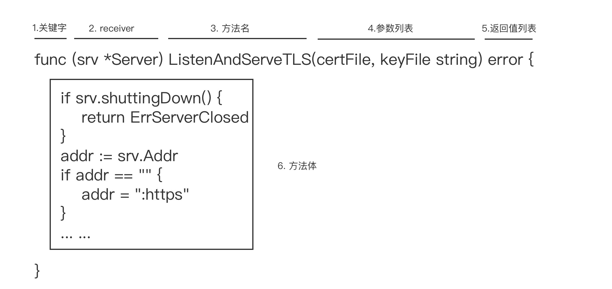

- 00 开篇词 这样入门Go，才能少走弯路.md.html
- 01 前世今生：你不得不了解的Go的历史和现状.md.html
- 02 拒绝“Hello and Bye”：Go语言的设计哲学是怎么一回事？.md.html
- 03 配好环境：选择一种最适合你的Go安装方法.md.html
- 04 初窥门径：一个Go程序的结构是怎样的？.md.html
- 05 标准先行：Go项目的布局标准是什么？.md.html
- 06 构建模式：Go是怎么解决包依赖管理问题的？.md.html
- 07 构建模式：Go Module的6类常规操作.md.html
- 08 入口函数与包初始化：搞清Go程序的执行次序.md.html
- 09 即学即练：构建一个Web服务就是这么简单.md.html
- 10 变量声明：静态语言有别于动态语言的重要特征.md.html
- 11 代码块与作用域：如何保证变量不会被遮蔽？.md.html
- 12 基本数据类型：Go原生支持的数值类型有哪些？.md.html
- 13 基本数据类型：为什么Go要原生支持字符串类型？.md.html
- 14 常量：Go在“常量”设计上的创新有哪些？.md.html
- 15 同构复合类型：从定长数组到变长切片.md.html
- 16 复合数据类型：原生map类型的实现机制是怎样的？.md.html
- 17 复合数据类型：用结构体建立对真实世界的抽象.md.html
- 18 控制结构：if的“快乐路径”原则.md.html
- 19 控制结构：Go的for循环，仅此一种.md.html
- 20 控制结构：Go中的switch语句有哪些变化？.md.html
- 21 函数：请叫我“一等公民”.md.html
- 22 函数：怎么结合多返回值进行错误处理？.md.html
- 23 函数：怎么让函数更简洁健壮？.md.html
- 24 方法：理解“方法”的本质.md.html
- 25 方法：方法集合与如何选择receiver类型？.md.html
- 26 方法：如何用类型嵌入模拟实现“继承”？.md.html
- 27 即学即练：跟踪函数调用链，理解代码更直观.md.html
- 28 接口：接口即契约.md.html
- 29 接口：为什么nil接口不等于nil？.md.html
- 30 接口：Go中最强大的魔法.md.html
- 31 并发：Go的并发方案实现方案是怎样的？.md.html
- 32 并发：聊聊Goroutine调度器的原理.md.html
- 33 并发：小channel中蕴含大智慧.md.html
- 34 并发：如何使用共享变量？.md.html
- 35 即学即练：如何实现一个轻量级线程池？.md.html
- 36 打稳根基：怎么实现一个TCP服务器？（上）.md.html
- 37 代码操练：怎么实现一个TCP服务器？（中）.md.html
- 38 成果优化：怎么实现一个TCP服务器？（下）.md.html
- 39 驯服泛型：了解类型参数.md.html
- 40 驯服泛型：定义泛型约束.md.html
- 41 驯服泛型：明确使用时机.md.html
- 元旦快乐 这是一份暂时停更的声明.md.html
- 加餐 作为Go Module的作者，你应该知道的几件事.md.html
- 加餐 如何拉取私有的Go Module？.md.html
- 加餐 我“私藏”的那些优质且权威的Go语言学习资料.md.html
- 加餐 聊聊Go 1.17版本的那些新特性.md.html
- 加餐 聊聊Go语言的指针.md.html
- 加餐 聊聊最近大热的Go泛型.md.html
- 大咖助阵 叶剑峰：Go语言中常用的那些代码优化点.md.html
- 大咖助阵 大明：Go泛型，泛了，但没有完全泛.md.html
- 大咖助阵 孔令飞：从小白到“老鸟”，我的Go语言进阶之路.md.html
- 大咖助阵 徐祥曦：从销售到分布式存储工程师，我与 Go 的故事.md.html
- 大咖助阵 曹春晖：聊聊 Go 语言的 GC 实现.md.html
- 大咖助阵 海纳：聊聊语言中的类型系统与泛型.md.html
- 期中测试 一起检验下你的学习成果吧.md.html
- 用户故事 罗杰：我的Go语言学习之路.md.html
- 结束语 和你一起迎接Go的黄金十年.md.html
- 结课测试 快来检验下你的学习成果吧！.md.html
- 捐赠
24 方法：理解“方法”的本质
你好，我是Tony Bai。
在前面的几讲中，我们对Go函数做了一个全面系统的学习。我们知道，函数是Go代码中的基本功能逻辑单元，它承载了Go程序的所有执行逻辑。可以说，Go程序的执行流本质上就是在函数调用栈中上下流动，从一个函数到另一个函数。
讲到这里，如果你做过提前预习，你可能要站出来反驳我了：“老师，你的说法太过绝对了，Go语言还有一种语法元素，方法（method），它也可以承载代码逻辑，程序也可以从一个方法流动到另外一个方法”。
别急！我这么说自然有我的道理，等会儿你就知道了。从这节课开始，我们会花三节课的时间，系统讲解Go语言中的方法。我们将围绕方法的本质、方法receiver的类型选择、方法集合，以及如何实现方法的“继承”这几个主题，进行讲解。
那么，在这一节课中，我就先来解答我们开头提到的这个问题，看看Go语言中的方法究竟是什么。等你掌握了方法的本质后，再来评判我的说法是否正确也不迟。
认识Go方法
我们知道，Go语言从设计伊始，就不支持经典的面向对象语法元素，比如类、对象、继承，等等，但Go语言仍保留了名为“方法（method）”的语法元素。当然，Go语言中的方法和面向对象中的方法并不是一样的。Go引入方法这一元素，并不是要支持面向对象编程范式，而是Go践行组合设计哲学的一种实现层面的需要。这个我们后面课程会展开细讲，这里你先了解一下就可以了。
简单了解之后，我们就以Go标准库net/http包中*Server类型的方法ListenAndServeTLS为例，讲解一下Go方法的一般形式：

Go中方法的声明和函数的声明有很多相似之处，我们可以参照着来学习。比如，Go的方法也是以func关键字修饰的，并且和函数一样，也包含方法名（对应函数名）、参数列表、返回值列表与方法体（对应函数体）。
而且，方法中的这几个部分和函数声明中对应的部分，在形式与语义方面都是一致的，比如：方法名字首字母大小写决定该方法是否是导出方法；方法参数列表支持变长参数；方法的返回值列表也支持具名返回值等。
不过，它们也有不同的地方。从上面这张图我们可以看到，和由五个部分组成的函数声明不同，Go方法的声明有六个组成部分，多的一个就是图中的receiver部分。在receiver部分声明的参数，Go称之为receiver参数，这个receiver参数也是方法与类型之间的纽带，也是方法与函数的最大不同。
接下来我们就重点说说这部分声明的receiver参数。
Go中的方法必须是归属于一个类型的，而receiver参数的类型就是这个方法归属的类型，或者说这个方法就是这个类型的一个方法。我们以上图中的ListenAndServeTLS为例，这里的receiver参数srv的类型为*Server，那么我们可以说，这个方法就是*Server类型的方法，
注意！这里我说的是ListenAndServeTLS是*Server类型的方法，而不是Server类型的方法。具体的原因，我们在后面课程还会细讲，这里你先有这个认知就好了。
为了方便讲解，我们将上面例子中的方法声明，转换为一个方法的一般声明形式：
func (t *T或T) MethodName(参数列表) (返回值列表) {
// 方法体
}
无论receiver参数的类型为*T还是T，我们都把一般声明形式中的T叫做receiver参数t的基类型。如果t的类型为T，那么说这个方法是类型T的一个方法；如果t的类型为*T，那么就说这个方法是类型*T的一个方法。而且，要注意的是，每个方法只能有一个receiver参数，Go不支持在方法的receiver部分放置包含多个receiver参数的参数列表，或者变长receiver参数。
那么，receiver参数的作用域是什么呢？
你还记得我们在第11讲中提到过的、关于函数/方法作用域的结论吗？我们这里再复习一下：方法接收器（receiver）参数、函数/方法参数，以及返回值变量对应的作用域范围，都是函数/方法体对应的显式代码块。
这就意味着，receiver部分的参数名不能与方法参数列表中的形参名，以及具名返回值中的变量名存在冲突，必须在这个方法的作用域中具有唯一性。如果这个不唯一不存在，比如像下面例子中那样，Go编译器就会报错：
type T struct{}
func (t T) M(t string) { // 编译器报错：duplicate argument t (重复声明参数t)
... ...
}
不过，如果在方法体中，我们没有用到receiver参数，我们也可以省略receiver的参数名，就像下面这样：
type T struct{}
func (T) M(t string) {
... ...
}
仅当方法体中的实现不需要receiver参数参与时，我们才会省略receiver参数名，不过这一情况很少使用，你了解一下就好了。
除了receiver参数名字要保证唯一外，Go语言对receiver参数的基类型也有约束，那就是receiver参数的基类型本身不能为指针类型或接口类型。下面的例子分别演示了基类型为指针类型和接口类型时，Go编译器报错的情况：
type MyInt *int
func (r MyInt) String() string { // r的基类型为MyInt，编译器报错：invalid receiver type MyInt (MyInt is a pointer type)
return fmt.Sprintf("%d", *(*int)(r))
}
type MyReader io.Reader
func (r MyReader) Read(p []byte) (int, error) { // r的基类型为MyReader，编译器报错：invalid receiver type MyReader (MyReader is an interface type)
return r.Read(p)
}
最后，Go对方法声明的位置也是有约束的，Go要求，方法声明要与receiver参数的基类型声明放在同一个包内。基于这个约束，我们还可以得到两个推论。
- 第一个推论：我们不能为原生类型（诸如int、float64、map等）添加方法。- 比如，下面的代码试图为Go原生类型int增加新方法Foo，这样做，Go编译器会报错：
func (i int) Foo() string { // 编译器报错：cannot define new methods on non-local type int
return fmt.Sprintf("%d", i)
}
- 第二个推论：不能跨越Go包为其他包的类型声明新方法。- 比如，下面的代码试图跨越包边界，为Go标准库中的http.Server类型添加新方法Foo，这样做，Go编译器同样会报错：
import "net/http"
func (s http.Server) Foo() { // 编译器报错：cannot define new methods on non-local type http.Server
}
到这里，我们已经基本了解了Go方法的声明形式以及对receiver参数的相关约束。有了这些基础后，我们就可以看一下如何使用这些方法（method）。
我们直接还是通过一个例子理解一下。如果receiver参数的基类型为T，那么我们说receiver参数绑定在T上，我们可以通过*T或T的变量实例调用该方法：
type T struct{}
func (t T) M(n int) {
}
func main() {
var t T
t.M(1) // 通过类型T的变量实例调用方法M
p := &T{}
p.M(2) // 通过类型*T的变量实例调用方法M
}
不过，看到这里你可能会问，这段代码中，方法M是类型T的方法，那为什么通过*T类型变量也可以调用M方法呢？关于这个问题，我会在下一讲中告诉你原因，这里你先了解方法的调用方式就好了。
从上面这些分析中，我们也可以看到，和其他主流编程语言相比，Go语言的方法，只比函数多出了一个receiver参数，这就大大降低了Gopher们学习方法这一语法元素的门槛。
但即便如此，你在使用方法时可能仍然会有一些疑惑，比如，方法的类型是什么？我们是否可以将方法赋值给函数类型的变量？调用方法时方法对receiver参数的修改是不是外部可见的？要想解除你心中这些疑惑，我们就必须深入到方法的本质层面。
接下来我们就来看看本质上Go方法究竟是什么。
方法的本质是什么？
通过前面的学习，我们知道了Go的方法与Go中的类型是通过receiver联系在一起，我们可以为任何非内置原生类型定义方法，比如下面的类型T：
type T struct {
a int
}
func (t T) Get() int {
return t.a
}
func (t *T) Set(a int) int {
t.a = a
return t.a
}
我们可以和典型的面向对象语言C++做下对比。如果你了解C++语言，尤其是看过C++大牛、《C++ Primer》作者Stanley B·Lippman的大作《深入探索C++对象模型》，你大约会知道，C++中的对象在调用方法时，编译器会自动传入指向对象自身的this指针作为方法的第一个参数。
而Go方法中的原理也是相似的，只不过我们是将receiver参数以第一个参数的身份并入到方法的参数列表中。按照这个原理，我们示例中的类型T和*T的方法，就可以分别等价转换为下面的普通函数：
// 类型T的方法Get的等价函数
func Get(t T) int {
return t.a
}
// 类型*T的方法Set的等价函数
func Set(t *T, a int) int {
t.a = a
return t.a
}
这种等价转换后的函数的类型就是方法的类型。只不过在Go语言中，这种等价转换是由Go编译器在编译和生成代码时自动完成的。Go语言规范中还提供了方法表达式（Method Expression）的概念，可以让我们更充分地理解上面的等价转换，我们来看一下。
我们还以上面类型T以及它的方法为例，结合前面说过的Go方法的调用方式，我们可以得到下面代码：
var t T
t.Get()
(&t).Set(1)
我们可以用另一种方式，把上面的方法调用做一个等价替换：
var t T
T.Get(t)
(*T).Set(&t, 1)
这种直接以类型名T调用方法的表达方式，被称为Method Expression。通过Method Expression这种形式，类型T只能调用T的方法集合（Method Set）中的方法，同理类型*T也只能调用*T的方法集合中的方法。关于方法集合，我们会在下一讲中详细讲解。
我们看到，Method Expression有些类似于C++中的静态方法（Static Method），C++中的静态方法在使用时，以该C++类的某个对象实例作为第一个参数，而Go语言的Method Expression在使用时，同样以receiver参数所代表的类型实例作为第一个参数。
这种通过Method Expression对方法进行调用的方式，与我们之前所做的方法到函数的等价转换是如出一辙的。所以，Go语言中的方法的本质就是，一个以方法的receiver参数作为第一个参数的普通函数。
而且，Method Expression就是Go方法本质的最好体现，因为方法自身的类型就是一个普通函数的类型，我们甚至可以将它作为右值，赋值给一个函数类型的变量，比如下面示例：
func main() {
var t T
f1 := (*T).Set // f1的类型，也是*T类型Set方法的类型：func (t *T, int)int
f2 := T.Get // f2的类型，也是T类型Get方法的类型：func(t T)int
fmt.Printf("the type of f1 is %T\n", f1) // the type of f1 is func(*main.T, int) int
fmt.Printf("the type of f2 is %T\n", f2) // the type of f2 is func(main.T) int
f1(&t, 3)
fmt.Println(f2(t)) // 3
}
既然方法本质上也是函数，那么我们在这节课开头的争论也就有了答案，这已经能够证明我的说法是正确的。但看到这里，你可能会问：我知道方法的本质是函数又怎么样呢？它对我在实际编码工作有什么帮助吗？
下面我们就以一个实际例子来看看，如何基于对方法本质的深入理解，来分析解决实际编码工作中遇到的真实问题。
巧解难题
这个例子是来自于我个人博客的一次真实的读者咨询，他的问题代码是这样的：
package main
import (
"fmt"
"time"
)
type field struct {
name string
}
func (p *field) print() {
fmt.Println(p.name)
}
func main() {
data1 := []*field{{"one"}, {"two"}, {"three"}}
for _, v := range data1 {
go v.print()
}
data2 := []field{{"four"}, {"five"}, {"six"}}
for _, v := range data2 {
go v.print()
}
time.Sleep(3 * time.Second)
}
这段代码在我的多核macOS上的运行结果是这样（由于Goroutine调度顺序不同，你自己的运行结果中的行序可能与下面的有差异）：
one
two
three
six
six
six
这位读者的问题显然是：为什么对data2迭代输出的结果是三个“six”，而不是four、five、six？
那我们就来分析一下。
首先，我们根据Go方法的本质，也就是一个以方法的receiver参数作为第一个参数的普通函数，对这个程序做个等价变换。这里我们利用Method Expression方式，等价变换后的源码如下：
type field struct {
name string
}
func (p *field) print() {
fmt.Println(p.name)
}
func main() {
data1 := []*field{{"one"}, {"two"}, {"three"}}
for _, v := range data1 {
go (*field).print(v)
}
data2 := []field{{"four"}, {"five"}, {"six"}}
for _, v := range data2 {
go (*field).print(&v)
}
time.Sleep(3 * time.Second)
}
这段代码中，我们把对field的方法print的调用，替换为Method Expression形式，替换前后的程序输出结果是一致的。但变换后，问题是不是豁然开朗了！我们可以很清楚地看到使用go关键字启动一个新Goroutine时，method expression形式的print函数是如何绑定参数的：
迭代data1时，由于data1中的元素类型是field指针(*field)，因此赋值后v就是元素地址，与print的receiver参数类型相同，每次调用(*field).print函数时直接传入的v即可，实际上传入的也是各个field元素的地址；
迭代data2时，由于data2中的元素类型是field（非指针），与print的receiver参数类型不同，因此需要将其取地址后再传入(*field).print函数。这样每次传入的&v实际上是变量v的地址，而不是切片data2中各元素的地址。
在第19讲《控制结构：Go的for循环，仅此一种》中，我们学习过for range使用时应注意的几个问题，其中循环变量复用是关键的一个。这里的v在整个for range过程中只有一个，因此data2迭代完成之后，v是元素“six”的拷贝。
这样，一旦启动的各个子goroutine在main goroutine执行到Sleep时才被调度执行，那么最后的三个goroutine在打印&v时，实际打印的也就是在v中存放的值“six”。而前三个子goroutine各自传入的是元素“one”、“two”和“three”的地址，所以打印的就是“one”、“two”和“three”了。
那么原程序要如何修改，才能让它按我们期望，输出“one”、“two”、“three”、“four”、 “five”、“six”呢？
其实，我们只需要将field类型print方法的receiver类型由*field改为field就可以了。我们直接来看一下修改后的代码：
type field struct {
name string
}
func (p field) print() {
fmt.Println(p.name)
}
func main() {
data1 := []*field{{"one"}, {"two"}, {"three"}}
for _, v := range data1 {
go v.print()
}
data2 := []field{{"four"}, {"five"}, {"six"}}
for _, v := range data2 {
go v.print()
}
time.Sleep(3 * time.Second)
}
修改后的程序的输出结果是这样的（因Goroutine调度顺序不同，在你的机器上的结果输出顺序可能会有不同）：
one
two
three
four
five
six
为什么这回就可以输出预期的值了呢？我把它留作这节课的思考题，你可以参考我的分析思路自行分析一下，欢迎你在留言区给出你的答案。
小结
好了，今天的课讲到这里就结束了，现在我们一起来回顾一下吧。
在这一讲中，我们开始讲解Go语言中除函数之外的、另一种可承载代码执行逻辑的语法元素：方法（method）。
我们要知道，Go提供方法这种语法，并非出自对经典面向对象编程范式支持的考虑，而是出自Go的组合设计哲学下类型系统实现层面上的需要。
Go方法在声明形式上相较于Go函数多了一个receiver组成部分，这个部分是方法与类型之间联系的纽带。我们可以在receiver部分声明receiver参数。但Go对receiver参数有诸多限制，比如只能有一个、参数名唯一、不能是变长参数等等。
除此之外，Go对receiver参数的基类型也是有约束的，即基类型本身不能是指针类型或接口类型。Go方法声明的位置也受到了Go规范的约束，方法声明必须与receiver参数的基类型在同一个包中。
Go方法本质上其实是一个函数，这个函数以方法的receiver参数作为第一个参数，Go编译器会在我们进行方法调用时协助进行这样的转换。牢记并理解方法的这个本质可以帮助我们在实际编码中解决一些奇怪的问题。
思考题
在“巧解难题”部分，我给你留了个问题，为啥我们只需要将field类型print方法的receiver类型，由*field改为field就可以输出预期的结果了呢？期待在留言区看到你的答案。
欢迎你把这节课分享给更多对Go语言的方法感兴趣的朋友。我是Tony Bai，我们下节课见。
© 2019 - 2023 Liangliang Lee. Powered by gin and hexo-theme-book.